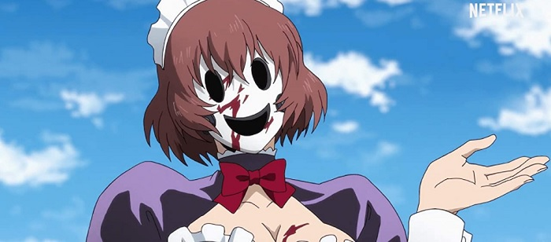
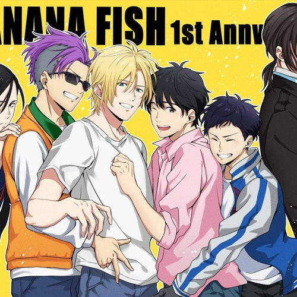

ANIME
1.BERSERK
Berserk es una historia de batallas épicas, de venganzas, de muerte y de luchas por conseguir el poder, por conseguir un nombre en una sociedad noble y despreciativa con las clases “inferiores”.
2.INVASION EN LAS ALTURAS

Yuri es transportada a un extraño mundo de edificios interminables y asesinos enmascarados. En medio de esa locura, ella hará lo que sea necesario para encontrar a su hermano y escapar de allí.
3.86: Eighty-Six
.jpeg)
Luego, durante la segunda parte, “86: Eighty-Six” atravesó por numerosas suspensiones derivadas de problemas de producción, lo que provocó que “se quedaran sin tiempo en televisión”.
4.AKAME GA KILL
.jpeg)
En este anime, se nos ofrece una inmersión muy realista en su guerra . Hay héroes en ambos bandos y cada uno tiene sus propias razones para luchar: justicia, venganza, dinero, poder, amor. Resulta difícil ver a algunos de los soldados del Capitolio como "malos", porque sus motivos son muy identificables.
5.BANANA FISH

Banana Fish es una serie de manga escrita e ilustrada por Akimi Yoshida. Fue serializada desde 1985 hasta 1994 por la revista Bessatsu Shōjo Comic. La adaptación de anime producida por MAPPA fue estrenada el 5 de julio de 2018 y finalizó con 24 episodios el 20 de diciembre de 2018